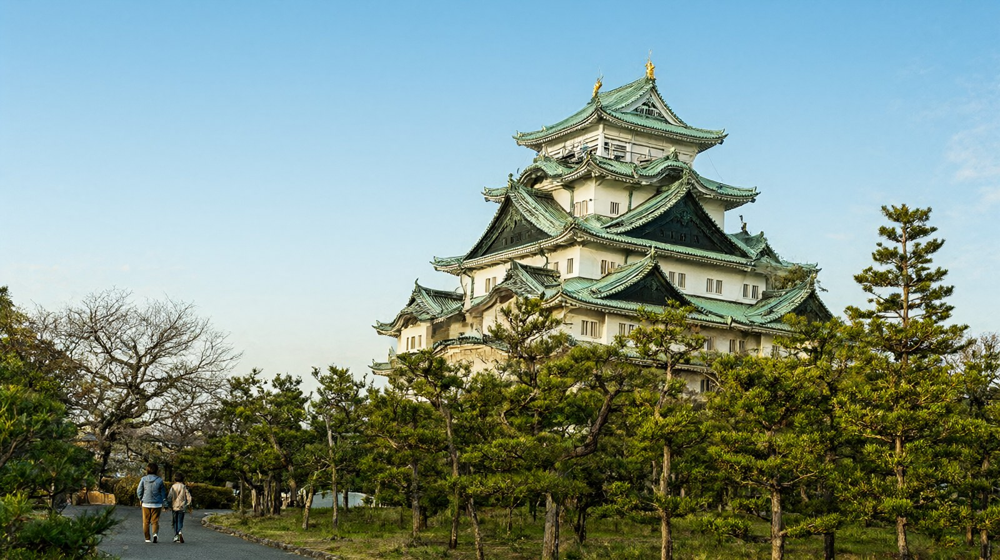

도쿄·오사카 사이 통과 도시. 직항이 많고, 천수각 내부는 폐관 중이라 본마루어전·나고야메시·수족관 중심 여행
나고야 여행 가이드
이 글은 블록 A~P 순서로 구성했습니다. 공식 출처로 확인한 값만 적었고, 확인하지 못한 값은 "확인 필요"로 남겼습니다. 확인일은 2026-10-22입니다. 환율은 100엔=853.02원(한국수출입은행 매매기준율, 2026-10-16 고시)이며, 원화 환산에는 모두 "약"을 붙였습니다. 가족(성인 2명, 초등학생 1명) 기준으로 읽어 주세요.
A. 히어로
- 도시명: 나고야
- 한 줄 요약: 도쿄와 오사카 사이 신칸센 중간에 있는 큰 도시입니다. 인천에서 매일 직항이 여러 편 있어 2박 3일로 가볍게 다녀오기 좋습니다. 나고야성 천수각은 안에 들어갈 수 없으므로, 본마루어전과 나고야메시, 수족관, 과학관, 자동차 기술 박물관에 시간을 쓰는 여행이 됩니다.
- 마지막 확인일: 2026-10-22
- 버튼: 2박 3일 일정 보기 | 총예산 예시 보기
B. 한눈에 보기
| 항목 | 내용 | 근거 |
|---|---|---|
| 추천 일수 | 2박 3일~3박 4일. 4박 5일이면 이누야마나 기후 당일치기를 하루 더할 수 있습니다 | 편집부 판단 |
| 비행시간 | 인천에서 직항 약 1시간 50분~2시간, 돌아오는 편은 약 2시간 | 나우보딩 공공 항공 데이터 |
| 1인 총예산 | 약 25만~55만원(항공 왕복 포함, 숙박·식비 제외) | K 블록 |
| 아이 적합도 | 높음. 수족관, 과학관, 도요타 산업기술기념관이 있습니다. 천수각 내부는 폐관입니다 | 각 시설 공식 안내 |
C. 이 도시가 맞는 사람
| 구분 | 내용 |
|---|---|
| 맞는 유형 | 인천 직항으로 2박 3일쯤 짧게 다녀오려는 가족. 히츠마부시와 미소카츠 같은 나고야메시를 먹고 싶은 여행. 수족관, 과학관, 자동차 기술 전시를 좋아하는 아이 |
| 맞는 유형 | 도쿄와 오사카를 신칸센으로 잇는 일정에서 하루 이틀 끼워 넣을 도시를 찾는 여행자 |
| 맞는 유형 | 성은 겉모습과 본마루어전만 봐도 충분한 가족 |
| 덜 맞는 유형 | 성 천수각 안까지 꼭 올라가 보고 싶은 여행자. 내부는 2018년부터 폐관이고 재개 시기는 공식적으로 정해지지 않았습니다 (나고야성 공식) |
| 덜 맞는 유형 | 대형 테마파크가 목적인 여행, 온천에서 쉬는 여행. 시내에는 이런 명소가 없습니다 |
- 나고야는 통과 도시로 불립니다. 도카이도 신칸센 노조미로 도쿄까지 약 1시간 34분, 신오사카까지 약 47~50분이라는 안내가 많습니다 (비공식, 여행 정보 사이트 기준이므로 출발 전 JR 시간표로 확인하세요). 지나치기 쉽지만 이 도시에서만 할 수 있는 일이 분명히 있습니다.
D. 점프 탭
E. 공항에서 시내까지
인천에서 오는 직항 (센트레아 = 주부국제공항)
센트레아 공식 한국어 항공사 안내에 따르면 대한항공, 아시아나항공, 제주항공, 진에어가 인천~나고야를 운항합니다. 대한항공, 아시아나, 진에어는 제1터미널, 제주항공은 제2터미널을 씁니다. 공공 항공 데이터(나우보딩, 2026-09-23 조회)로는 2026년 9월 기준 하루 9편이고 네 항공사 모두 매일 운항합니다. 검색 사이트에는 계절 운항편이 따로 보이기도 합니다.
| 항공사 | 인천 출발 예시 | 나고야 출발 예시 | 운항 |
|---|---|---|---|
| 대한항공 | KE741 10:40, KE751 19:05 | KE752 09:25, KE742 13:40 | 매일 |
| 아시아나항공 | OZ122 08:15, OZ124 16:00 | OZ121 11:05, OZ123 18:50 | 매일 |
| 제주항공 | 7C1602 11:10, 7C1608 18:00 | 7C1607 09:00, 7C1601 13:50 | 매일 |
| 진에어 | LJ345 | LJ346 10:25, LJ348 19:00 | 매일 |
편명과 시각은 계절과 요일에 따라 바뀝니다. 예약할 때 항공사 공식 일정으로 다시 확인하세요. 부산~나고야는 아시아나와 에어부산 공동운항으로 매일 1왕복이라는 안내가 있지만 비공식(나고야 투어 안내)이라 확인 필요입니다.
공항에서 나고야역까지
공항역은 터미널의 액세스 플라자와 단차 없이 이어집니다 (센트레아 공식). 나고야역으로 가는 표준 수단은 메이테츠 열차입니다. 나고야역행 리무진 버스는 전편 운휴 중이어서, 버스는 사카에·후시미 방면만 이용할 수 있습니다.
| 수단 | 소요시간 | 어른 편도 요금 | 막차(공항 출발) | 잘 맞는 경우 |
|---|---|---|---|---|
| 뮤스카이(전 차량 특별차, 전 좌석 지정) | 최단 28분 | 운임 980엔과 뮤티켓 450엔, 합계 1,430엔(약 12,200원) | 확인 필요 | 짐이 많고 나고야역 숙소일 때 |
| 특급·쾌속특급 일반차 | 약 35~40분 | 980엔(약 8,400원) | 밤 11시 31분 무렵(네비타임, 2026-10-22 조회, 비공식) | 요금을 아끼고 싶은 가족 |
| 준급·급행 | 약 40~50분 | 980엔(약 8,400원) | 밤 11시 30분 무렵(비공식) | 시간 여유가 있을 때 |
| 리무진 버스(사카에·후시미행) | 55분부터 | 2,000엔(약 17,100원) | 공항 출발 21:40(메이테츠 버스 공식) | 사카에 숙소, 짐이 많을 때 |
| 나고야역 서쪽 출구행 심야·조조 버스 | 55분 | 1,500엔(약 12,800원) | 심야·조조 전용 | 늦게 도착하거나 일찍 출발할 때 |
| 관광택시 | 50분부터 | 12,000엔(약 102,000원) | 심야 가능 | 3~4명이 나눠 탈 때 |
- 뮤스카이는 모든 차량이 특별차라서 승차권 외에 뮤티켓 450엔이 필요합니다. 특급은 1·2호차만 특별차이므로 일반차는 승차권만으로 탈 수 있습니다 (메이테츠 공식).
- 교통카드(manaca, Suica 등)로 기본 운임을 낼 수 있고, 뮤티켓은 따로 삽니다 (메이테츠 공식).
- 어린이는 만 6세 미만이 어른 1명당 2명까지 무료이고, 만 12세 미만은 어른 요금의 반액입니다 (메이테츠 공식). 초등학생 자녀는 반액을 적용하면 됩니다.
- 나고야 관광 가이드에는 뮤스카이 운임이 890엔과 360엔으로 적혀 있어 개정 여부가 엇갈립니다. 출발 전에 메이테츠 공식 페이지를 다시 확인하세요.
- 사카에·후시미 리무진은 2024년 11월부터 완전 캐시리스 실증 운행이라 차내에서 현금을 받지 않고, 교통 IC카드나 카드 터치만 됩니다 (메이테츠 버스 공식). 공항 출발은 9:40, 11:40, 12:40, 13:40, 15:40, 17:40, 19:40, 21:40이고 2026년 10월 기준입니다. 11월 1일에 개정 예정이라고 안내됩니다.
- 제주항공을 타면 제2터미널에서 내립니다. 제1터미널 액세스 플라자와 제2터미널 사이에는 무료 셔틀버스가 15분 간격으로 다닙니다 (센트레아 공식).
F. 숙소 권역
1박 가격은 날짜에 따라 많이 달라 숫자를 적지 않았습니다. 나고야역, 사카에, 가나야마 주변에는 비즈니스 호텔이 많으니 같은 날짜와 같은 인원 조건으로 비교하세요.
| 권역 | 장점 | 단점 | 1박 가격대 | 잘 맞는 동행 |
|---|---|---|---|---|
| 나고야역 | 뮤스카이 직통, 신칸센과 JR, 지하철, 메이테츠가 모두 모이는 거점. 이누야마와 기후 이동에 유리 | 번화가인 사카에와는 조금 떨어져 있음 | 확인 필요 | 근교 이동이 많은 가족, 도쿄·오사카 경유 여행 |
| 사카에·후시미 | 도심 번화가. 오아시스21, 나고야 TV탑, 과학관이 가깝고 공항 리무진이 섬 | 열차로는 나고야역에서 지하철로 갈아타야 함 | 확인 필요 | 시내 구경과 식사 위주 가족 |
| 가나야마 | 메이테츠, JR, 지하철이 만나고 공항 열차가 섬. 나고야항 수족관까지 지하철로 바로 연결 | 관광 중심지에서 약간 떨어짐 | 확인 필요 | 수족관이 목적인 가족 |
| 오스 | 오스 상점가와 오스칸논이 가까워 먹거리가 많음 | 밤에는 번화가 분위기가 남 | 확인 필요 | 먹거리와 골목 구경 위주 가족 |
- 나고야역에는 JR, 메이테츠, 지하철 역이 따로 있습니다. 호텔 공식 안내에서 가장 가까운 출구를 미리 확인하세요 (나고야 관광 가이드).
G. 추천 일정
나고야 전용 일정 글은 아직 없어서 구성안으로 대신합니다. 하루 방문지는 2~3곳, 오후에는 쉬는 시간을 넣었습니다.
| 일수 | 구성 |
|---|---|
| 2박 3일 | 1일차 도착 후 오스칸논과 오스 상점가를 걷고 나고야메시로 저녁. 2일차 나고야성 본마루어전을 보고 사카에에서 과학관이나 TV탑. 3일차 도요타 산업기술기념관 또는 나고야항 수족관을 보고 귀국 |
| 3박 4일 | 1일차 오스. 2일차 나고야성과 사카에. 3일차 나고야항 수족관에서 종일(돌고래와 범고래 프로그램) 또는 도요타기념관과 사카에 쇼핑. 4일차 귀국 |
| 4박 5일 | 3박 4일 구성에 이누야마성이나 기후성 당일치기를 하루 더함 |
- 수족관, 도요타기념관, 과학관은 모두 월요일이 휴관입니다. 첫날이 월요일이면 오스, 나고야성, 사카에 중심으로 짜세요.
- 도쿄와 오사카 사이에 끼워 넣는다면 신칸센 시간(도쿄까지 약 1시간 34분, 신오사카까지 약 47~50분, 비공식)을 역산해서 반나절 이상 여유를 두세요.
H. 아이 동반 코스 (선택)
| 시설 | 확인된 내용 | 예약 | 유모차·수유실·휴식 |
|---|---|---|---|
| 나고야항 수족관 | 돌고래 퍼포먼스(약 15분), 범고래 공개 훈련, 정어리 떼 전시(약 3만 5천 마리), 터치 탱크. 관람 2~3시간. 9:30~17:30이고 여름은 20:00, 겨울은 17:00까지. 입장은 폐관 1시간 전까지. 월요일 휴관(공휴일이면 다음 날), 골든위크와 7~9월, 연말연시, 봄방학은 무휴 | 20명 이상 단체만 사전 예약. 개인은 당일 입장 | 유모차 대여 1일 100엔(7~24개월용), 베이비코너(북관 2층, 남관 2층), 미아 스티커, 당일 재입장 가능. 보관함 대 300엔, 특대 400엔, 소 200엔 (나고야항 수족관 공식) |
| 도요타 산업기술기념관 | 섬유기계와 자동차 기술을 실제 기계 시연으로 보여 줌. 관람 1시간 30분~2시간. 9:30~17:00(입장 16:30까지). 월요일 휴관(공휴일이면 다음 날), 연말연시 휴관 | 공식 안내에 개인 예약 제도 없음 | 가족용 체험 프로그램과 워크시트가 있음. 한국어 안내 페이지 운영 (도요타기념관 공식) |
| 나고야시 과학관 | 내경 35m 플라네타리움 돔과 체험 전시 약 260점. 9:30~17:00(입장 16:30까지). 월요일, 셋째 금요일, 12/29~1/3 휴관 | 공식 안내에 개인 예약 제도 없음 | 후시미역 4·5번 출구에서 도보 5분. 전시실과 플라네타리움 어른 1,000엔, 중학생 이하 무료 (아이치현 관광 공식) |
| 지브리파크 (근교) | 사랑·지구박람회 기념공원 안의 공원형 시설 | 날짜를 정하는 사전 예약 필수 | 센트레아에서 리무진 85분, 2,000엔. 세부 요금과 예약 방법은 확인 필요 (센트레아 공식 버스 안내) |
- 천수각 내부를 볼 수 없으므로 아이 코스는 수족관, 과학관, 도요타기념관을 먼저 고려하세요. 본마루어전은 신발을 벗고 들어가는 실내라 비 오는 날 대안으로 좋습니다.
I. 맛집 시간대 (선택)
나고야메시의 대표 메뉴는 히츠마부시(장어 덮밥을 네 가지 방식으로 먹는 요리), 미소카츠(된장 소스 돈가츠), 기시멘(납작한 우동), 미소니코미 우동, 덴무스(새우튀김 주먹밥), 오구라토스트, 안카케 스파게티입니다. 가게별 가격과 예약 규정은 확인하지 못해 "확인 필요"로 둡니다.
| 시간대 | 방향 | 가격대 | 예약 |
|---|---|---|---|
| 아침 | 호텔 조식, 또는 카페의 오구라토스트. 나고야는 아침 카페 문화로 알려져 있습니다 | 확인 필요 | 확인 필요 |
| 점심 | 오스 상점가, 백화점 지하 식품관, 기시멘이나 미소카츠 가게 | 확인 필요 | 인기 가게는 확인 필요 |
| 저녁 | 나고야역이나 사카에에서 히츠마부시, 미소카츠. 아이 취침 시간을 생각해 일찍 | 확인 필요 | 인기 가게는 확인 필요 |
| 야식 | 아이와 함께라면 편의점 간식 정도 | 해당 없음 | 해당 없음 |
- 히츠마부시는 1인분이 큰 편이라 초등학생 자녀와 한 그릇을 나눠도 됩니다 (일반 상식).
J. 근교 당일치기 (선택)
세 곳은 이번에 자세히 조사하지 않고 방향과 이름만 정리했습니다. 이동 시간과 요금은 방문 전에 공식 안내로 확인하세요.
| 목적지 | 나고야역에서 이동(비공식) | 당일 가능 | 메모 |
|---|---|---|---|
| 이누야마 | 메이테츠로 약 25~30분 | 가능 | 국보 천수각이 남아 있는 이누야마성. 성하마을 할인 승차권 안내가 있습니다 (메이테츠) |
| 기후 | 메이테츠로 약 30분~1시간 | 가능 | 기후성과 나가라강. 정확한 시간과 요금은 확인 필요 |
| 이세·시마 | JR이나 긴테쓰로 약 1시간 30분~2시간 | 이른 출발이면 가능 | 이세신궁과 시마(미에현). 당일치기는 빠듯하므로 3박 4일 이상을 권합니다 |
K. 총예산 예시
성인 1인, 2박 3일, 인천 출발 기준입니다. 환율은 100엔=853.02원(한국수출입은행 매매기준율, 2026-10-16 고시)입니다.
| 항목 | 금액(약) | 근거 |
|---|---|---|
| 항공 | 약 19만~45만원 | 인천 왕복 표시값. 제주항공 최저 약 18.5만원, 전체 평균 약 26만원, 대한항공 평균 약 44.8만원 (호텔스컴바인 2026-10-16 갱신, 비공식) |
| 숙박 | 확인 필요 | 나고야역·사카에 비즈니스 호텔을 날짜별로 비교해야 합니다 |
| 식비 | 확인 필요 | 확인된 출처 없음 |
| 교통 | 약 2만 8천원 | 공항 왕복 메이테츠 특급 1,960엔(약 16,700원)과 시내 지하철 약 1,300엔(약 11,100원). 지하철 1일권 요금은 확인 필요 |
| 입장료 | 약 34,400원 | 나고야성 1,000엔, 나고야항 수족관 2,030엔, 도요타기념관 1,000엔(어른). 과학관과 지브리파크는 별도 |
| 합계 (숙박·식비 제외) | 약 25만~55만원 | 항공 하한 기준 약 25만원, 대한항공 평균 기준 계산값은 약 51만원입니다. 55만원은 여유를 둔 상한 표기입니다 |
- 허브 앞머리와 권역 페이지의 예산 범위(25만~55만원)는 서로 같은 값으로 유지했습니다.
예산 계산기로 계산 (예정)
L. 현지 팁·주의
_3~5줄_
- 나고야성 천수각은 2018년 5월부터 내진 문제로 내부가 폐관 중이며 재개 시기는 공식적으로 정해지지 않았습니다. 외관과 본마루어전은 볼 수 있고, 관람료는 2026년 10월 1일부터 성인 1,000엔입니다. 중학생 이하는 무료입니다 (나고야성 공식).
- 수족관, 도요타기념관, 과학관은 월요일 휴관이고 과학관은 셋째 금요일에도 쉽니다. 월요일 도착이라면 일정을 바꾸세요.
- 나고야역행 리무진은 전편 운휴 중입니다. 공항에서 나고야역은 메이테츠 열차로 가고, 사카에 숙소라면 리무진(2,000엔)을 쓸 수 있는데 현금이 통하지 않습니다.
- 시내 지하철 1일권(도니치에코)은 메이테츠 공항 열차에 쓸 수 없다는 안내가 있어 공항 왕복은 따로 계산합니다 (비공식).
- 도쿄·오사카 사이를 오갈 때는 신칸센 시각을 기준으로 반나절 이상 여유를 두는 것이 안전합니다.
M. 귀국 동선
- 나고야역에서 공항까지 뮤스카이 약 28분, 특급 약 35분입니다. 나고야역발 막차는 밤 10시 40분 무렵으로 보입니다 (네비타임, 2026-10-22 조회, 비공식). 항공편 출발 시각에서 체크인과 보안, 출국 심사 시간을 빼고 열차 시각을 정하세요.
- 국제선 체크인 마감 시각은 항공사마다 다릅니다. 제주항공은 제2터미널이므로 무료 셔틀 이동 시간도 더하세요.
- 면세는 2026년 11월 1일 구매분부터 세금이 포함된 가격으로 사고, 출국 때 세관 확인을 받은 뒤 환급받는 방식으로 바뀝니다. 1개 점포에서 하루 5,000엔 이상(세금 별도)이 대상입니다 (일본 세관). 10월 31일까지의 구매분은 계산대에서 세금을 빼는 기존 방식입니다. 센트레아에 환급 단말기가 있는지는 확인 필요이므로 쇼핑이 많으면 일찍 도착하세요.
- 면세 환급 절차 글
N. FAQ
_5~7개_
- 인천에서 나고야까지 직항이 있나요? 네. 대한항공, 아시아나항공, 제주항공, 진에어가 매일 운항하고 2026년 9월 기준 하루 9편입니다 (공공 항공 데이터). 비행시간은 약 1시간 50분~2시간입니다.
- 나고야성 천수각에 올라갈 수 있나요? 아니요. 2018년 5월부터 내부가 폐관이고 재개 시기는 정해지지 않았습니다. 외관과 본마루어전은 볼 수 있으며, 관람료는 2026년 10월 1일부터 성인 1,000엔입니다 (나고야성 공식).
- 공항에서 나고야역까지는 어떻게 가나요? 메이테츠 뮤스카이가 최단 28분으로 가장 빠르고 운임 980엔에 뮤티켓 450엔이 듭니다. 특급 일반차는 약 35분에 980엔입니다. 나고야역행 리무진은 운휴 중입니다 (메이테츠 공식).
- 사카에에 묵으면 공항에서 어떻게 가나요? 나고야역에서 지하철 히가시야마선으로 갈아타거나(약 5분, 210엔), 사카에·후시미 리무진(55분, 2,000엔, 완전 캐시리스)을 탑니다.
- 아이와 어디를 가면 좋나요? 나고야항 수족관(월요일 휴관), 나고야시 과학관(중학생 이하 무료), 도요타 산업기술기념관을 권합니다. 천수각 내부는 폐관이라 우선순위가 낮습니다.
- 며칠이 적당한가요? 2박 3일이면 오스, 나고야성, 수족관 또는 기념관 중 둘을 여유 있게 볼 수 있고, 3박 4일이면 셋 다 볼 수 있습니다. 도쿄·오사카 경유라면 반나절만 써도 됩니다.
- 나고야메시는 무엇을 먹나요? 히츠마부시, 미소카츠, 기시멘이 대표입니다. 가격과 예약 규정은 방문 전에 확인하세요.
O. 관련 글
- 주부·시코쿠·기타 권역 가이드 (같은 권역)
- 마쓰야마 여행 가이드 (같은 권역 도시)
- 다카마쓰 여행 가이드 (같은 권역 도시)
- 2026년 11월 일본 면세 환급 절차 (M 블록 연결)
- 데이터가 안 될 때 대처법
- 출국 전 체크리스트
- 항공권 총액 비교
P. 다른 도시 비교 (선택)
_다른 도시 카드_
아래 값은 각 도시 허브 앞머리에서 가져왔습니다. 예산은 도시마다 산정 기준(숙박·식비 포함 여부, 일정 길이)이 달라 단순 비교가 어렵습니다. 기준은 각 허브의 K 블록을 확인하세요.
| 도시 | 허브 | 비행시간 | 1인 총예산 | 추천 일수 |
|---|---|---|---|---|
| 마쓰야마 | 허브 보기 | 인천 직항 약 1시간 35분 | 약 47만원 이상(식비 제외 하한) | 3박 4일 |
| 다카마쓰 | 허브 보기 | 인천 직항 약 1시간 40분~1시간 45분 | 약 25만~40만원(숙박·식비 제외) | 2박 3일~3박 4일 |
| 오사카 | 허브 보기 | 인천 직항 약 1시간 40분~2시간 | 약 32만~62만원(숙박·식비 제외) | 3박 4일 |
| 도쿄 | 허브 보기 | 인천·김포 약 2시간 5분~2시간 40분 | 약 60만~115만원 | 3박 4일 |
| 후쿠오카 | 허브 보기 | 인천 직항 약 1시간 30분 | 약 35만~65만원(2박 3일, 항공 포함) | 2박 3일~3박 4일 |
확인 필요로 남긴 항목
- 뮤스카이 막차 시각(네비타임 기준 특급은 밤 11시 31분 무렵이나 계절과 항공 스케줄에 따라 변동)
- 부산~나고야 노선의 항공사와 편명(나고야 투어 안내는 비공식)
- 숙소 1박 가격대, 식당 가격과 예약 규정
- 나고야 지하철 1일권(도니치에코) 정확한 요금
- 나고야시 과학관과 지브리파크의 세부 예약·요금
- 신칸센 소요시간(비공식 안내이므로 JR 시간표로 확인)
- 센트레아 면세 환급 단말기 유무
- 뮤스카이 운임 개정 여부(나고야 관광 가이드 표기와 메이테츠 표기가 다름)
공식 출처
- 센트레아 나고야 중부국제공항(한국어): https://www.centrair.jp/ko/
- 메이테츠 공항 접근(한국어): https://www.meitetsu.co.jp/kor/airport-access/
- 메이테츠 버스 센트레아 리무진: https://www.meitetsu-bus.co.jp/airport/limousine
- 나고야성 공식: https://www.nagoyajo.city.nagoya.jp/
- 도요타 산업기술기념관(한국어): https://www.tcmit.org/korean/
- 나고야항 수족관(한국어): https://nagoyaaqua.jp/korean/
- 나고야 관광 가이드: https://www.nagoya-info.jp/ko/
- 아이치현 관광(나고야시 과학관): https://aichinow.pref.aichi.jp/